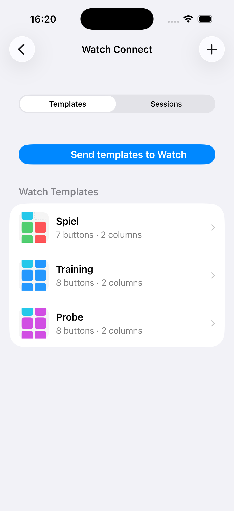
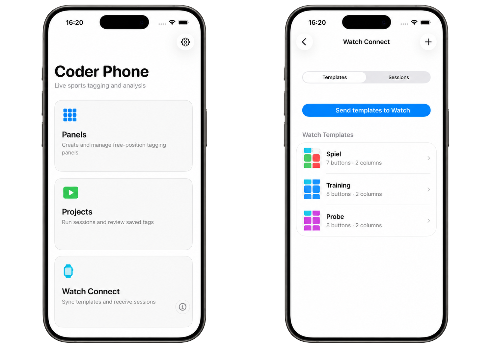
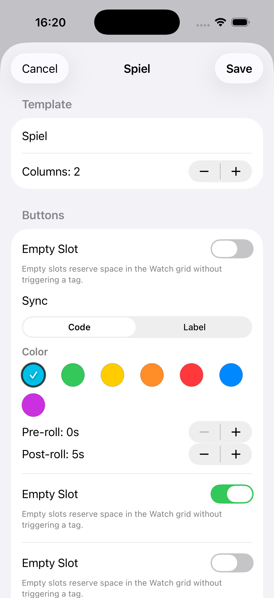
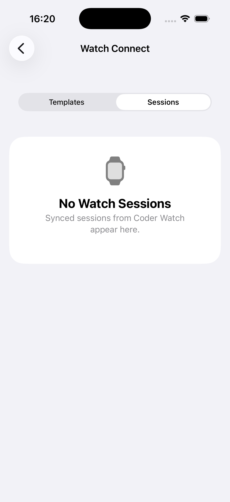
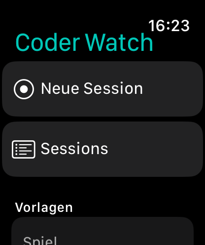
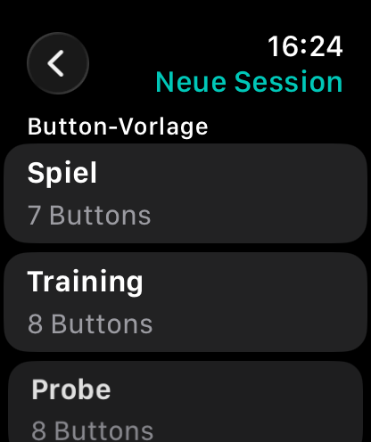
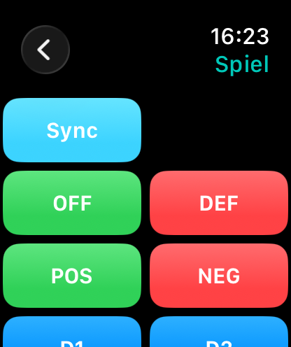
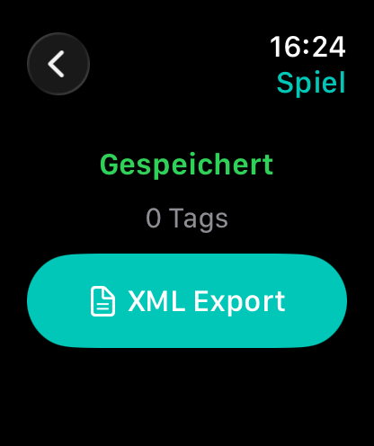

Vorlagen gezielt senden
Wähle in Coder Phone aus, welche Vorlagen auf der Apple Watch verfügbar sein sollen. So bleibt die Watch fokussiert und schnell.
Coder Watch
Coder Watch erweitert Coder Phone um schnelles Tagging auf der Apple Watch. Vorlagen werden am iPhone vorbereitet, an die Watch gesendet und dort als reduzierte, klare Button-Flächen für Training und Spiel genutzt.
Für Situationen, in denen ein iPhone zu groß ist: ein Blick, ein Tap, ein sauberer Tag.

Watch Connect
Coder Phone bleibt die Schaltzentrale: Vorlagen anlegen, auswählen und an die Watch senden. Coder Watch zeigt nur die ausgewählten Templates und speichert Sessions zurück für Export und weitere Analyse.

Wähle in Coder Phone aus, welche Vorlagen auf der Apple Watch verfügbar sein sollen. So bleibt die Watch fokussiert und schnell.

Farben, Spalten, leere Slots, Pre-Roll und Post-Roll werden auf dem iPhone gepflegt und dann an die Watch übertragen.

Aufgezeichnete Watch-Sessions erscheinen wieder in Coder Phone und können dort geprüft oder exportiert werden.
Schneller Rundgang
Der Watch-Workflow ist bewusst klein gehalten: Vorlage wählen, live taggen, Session speichern und als XML zurück in den Coder-Workflow bringen.

Neue Session starten oder bestehende Sessions öffnen.

Nur die vom iPhone gesendeten Templates erscheinen auf der Watch.

Große Buttons, klare Farben und kurze Wege für schnelle Tags.

Gespeicherte Sessions können als XML in den weiteren Coder-Workflow.
Für die Praxis
Markiere Aktionen schnell, ohne das iPhone ständig in der Hand zu halten.
Nutze kleine Template-Sets für Übungen, Belastungssteuerung oder Coaching-Beobachtungen.
Sessions werden zurück an Coder Phone übergeben und bleiben mit dem macOS-Workflow kompatibel.
Kompatibilität
Coder Watch ist als Companion für Coder Phone gedacht. Das iPhone verwaltet Templates und Sprache, die Watch übernimmt das schnelle Tagging und synchronisiert Sessions zurück.